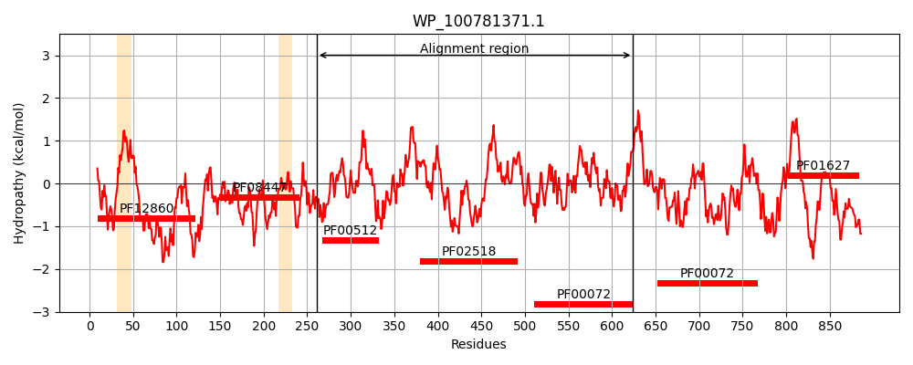
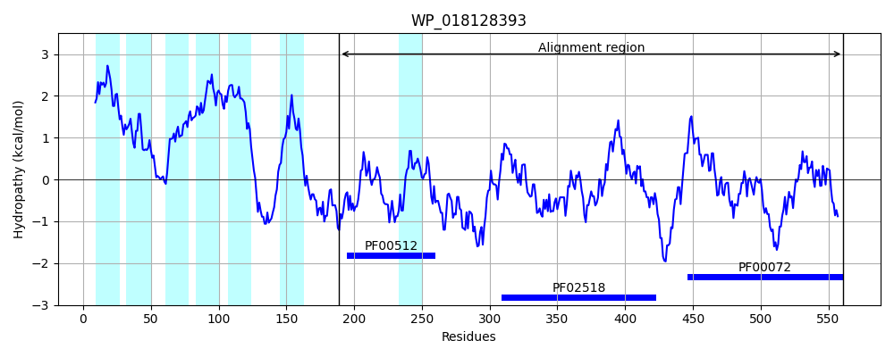
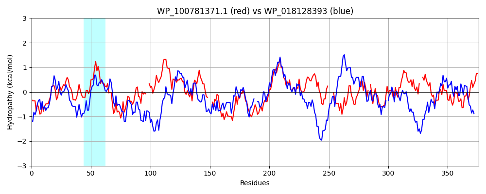

Hit Accession: WP_018128393
Hit TCID: 9.B.238.3.1
Hit Description: gnl|BL_ORD_ID|20890 gnl|TC-DB|WP_018128393.1|9.B.238.3.1 hybrid sensor histidine kinase/response regulator [Balneola vulgaris]
Mach Len: 376
e:0.000000
Query TMS Count : 2
Hit TMS Count: 7
TMS-Overlap Score: 0.850000
Predicted Substrates:None
BLAST Alignment:
Score: 470 , Bit scores: 185 bits, E-value: 5.3e-50, Alignment length: 376, Percentage identity: 32
Query: 261 AREANEAKSAFLANMSHEIRTPMNGILGMTQLCLDTPLTAEQREYLSLVMSSAQSLLHIINDILDFSRIESGKMQVDEEPLEIRPFIQSLIRPHMPA--ASEKGIELLVDISPAVPEVLIVDGPRLRQILTNLLGNALKFTHQGEVLLA---IAPADDESRWRFRIRDTGIGIAPEKQKAIFEAFSQADSSTTRRYGGTGLGLTISARLVSLMGGELMVESQPGAGSEFAFTLPLEGLHAAASGSAPLSR----FNNQRVLVVDDNSTNLRLLDTMLRQMGLMP-SCVDNAGEALRRAAEGPPWPLILLDAQMPDMDGVSLALELSA--LPEARQSQIIMLSSMSRHFDANMLKRIGIAHYLHKPVAQRELHQVIA 624
A A++ KS FLA +SHE+RTP+NGI+G+T+L +T L+ EQRE ++ + S+ L +I D+LD++ +E K+ + + I+ +++L+ P + K IEL + +PE++I D RLRQIL NL+ NA+KFT++G + + IA +D R RF I D+GIGI+ + + +F F +A T + GTGLGL I L+ LM G + V+S+ G GS F +P + + F ++L+ +D N +L ML + + VDN +A+ RA + +L+D QMP +DG+ + +++ + + +II +++ D +GI KP+ + + +++
Sbjct: 189 AEAADDTKSQFLATISHEMRTPLNGIVGITELLEETNLSDEQRELVTNLAYSSNMLNSLIGDVLDYTLLEDRKLVLQNNEIHIQKELKNLVDMFKPKIDSKNKRIELKFEYDSEIPEIVIGDVTRLRQILVNLVNNAVKFTNEGYIHIKTRFIAEEEDIQRVRFTIEDSGIGISEQDKALLFTKFFRA--KTNDKVEGTGLGLAICRGLIDLMNGAIYVDSKLGEGSTFTIEIPFRAYEDKSVQEVKDHKDKECFAGLKILIAEDVLVNQLVLKKMLEHLSVTDVEIVDNGEDAVERAI-SDNYDFVLMDIQMPKLDGMDASEKITEYYADKEHKPKIIAVTANVMKSDLARYAEVGIIDAATKPLNTQMIRDLLS 561 | Protein Hydropathy Plots: |
|---|
|  |  |
Pairwise Alignment-Hydropathy Plot:
|
|---|
|  |